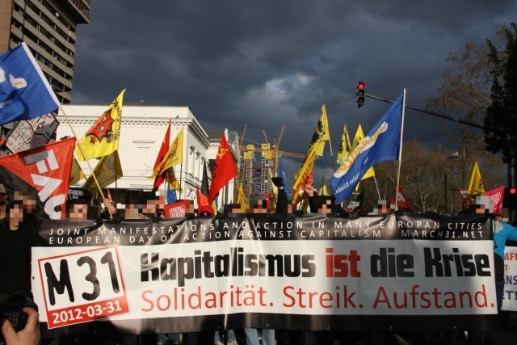

Am 31. März fand in Frankfurt am Main sowie in vielen europäischen Städten Europas eine große Demonstration statt, die ein Zeichen gegen kapitalistische Logik und autoritären Krisenmanagement der EU setzten sollte. Erfreulich ist eine Demonstration zu diesem Thema, die einen deutlichen internationalen Bezug aufweist, und die nicht an den Vater Staat appelliert, er möge uns bitte-bitte in die Zeiten vor der Krise versetzten, wo angeblich alles noch OK war.
Aus Frankfurt wurde vom massiven Polizeiaufgebot berichtet, mit dem das hessische Innenministerium die Demonstration erfolgreich in Schach hielt, von „massiven Entgleisungen“ seitens der DemonstrantInnen, die der Polizei als willkommener Anlass zu Gewalt und Festnahmen dienten. Von über 400 Festgenommenen und etwa 130 Verletzten ist die Rede. Das alles natürlich mit juristischem Nachspiel, womit sich die OrganisatorInnen der Demo jetzt beschäftigen dürften.
Das M31-Bündnis, welches aus anarcho-syndikalistischen Gewerkschaften, antifaschistischen und explizit antikapitalistischen Gruppen und Organisationen besteht, wollte mit diesem europaweiten Aktionstag die Politik der EU in der Krise anprangern und in Frankfurt nicht zuletzt die Rolle der Europäischen Zentralbank skandalisieren. Den beteiligten Gruppierungen könnte mensch die Naivität nicht unterstellen, Staat und Kapital mit Hilfe von Großdemonstrationnen bekämpfen zu wollen. Die Wahrnehmung des Aktionstags in der Presse, zumindest in Deutschland, lässt jedoch feststellen, dass die Ziele wohl nicht erreicht wurden und einige grundsätzliche Überlegungen aufstellen, was Aktionsformen angeht.

Dass die bürgerliche Presse kein gutes Wort über die Inhalte gefunden hat, die die Demonstration transportieren sollte, dürfte kaum verwunderlich sein. Erstens hat sie bis jetzt nur Zahnlosigkeiten der deutschen Occupy- und Echte Demokratie Jetzt!-Bewegungen positiv aufgenommen, weil diese Zahnlosigkeiten eh zum Allgemein(un)wissen der bürgerlichen Gesellschaft gehören und diese nur auf diesem zahnlosen Niveau ihre eigene Existenzbedingungen – Staat und Kapital – kritisieren kann. Zweitens – und es ist viel offensichtlicher – sobald das Bild vom randalierenden Schwarzen Block, dem gewaltbereiten linken Demonstranten auftaucht, geilt sich bürgerliche Presse daran auf und vergisst gerne jegliche Inhalte. Ob es allerdings nur an „schwarzen Schafen“ unter den DemonstrantInnen lag, die sich am Aktionskonzept der Demo nicht hielten, daran zweifle ich und maße mir nicht an, an dieser Stelle über die Taktik des Schwarzen Blocks zu richten. Meiner Meinung nach liegt es vielmehr daran, dass alle Beteiligten, die bürgerliche Presse inklusive, eigentlich ganz genau wussten, dass der so genannte Aktionstag zum Bereich der symbolischen Politik – oder weniger verblümt – des linken Bewegungsspektakels gehört.
Lasst uns darüber nachdenken. Die Zeiten in Deutschland – wie wohl in ganz Westeuropa –, wo Demonstrationen (früher eher als „Umzüge“ bezeichnet) tatsächlich etwas demonstriert hatten – nämlich mehr oder weniger reale Kräfteverhältnisse – sind vorbei. Vorbei die heroischen Zeiten des deutschen Proletariats, wo ein Karl Liebknecht oder ein Kurt Eisner bei einem Umzug die Räterepublik ausrufen konnte und die Massen ihre demonstrierte Kraft angewendet haben, indem sie einfach Städte oder Teile davon besetzten. Heute dient eine Demonstration dem Zweck der Kommunikation. Und das nur im besten Fall. So kann z.B. eine gelungene antifaschistische „Gegenveranstaltung“, Demonstration oder was auch immer, Nazis oder sonstige unwillkommene Gestalten daran hindern, das sie sich als Kraft darstellen und ihre Inhalte kommunizieren. Und es kann kommunikationstechnisch in die Hose gehen. So ging es, um ein frisches Beispiel zu nennen, bei der Demonstration für iranische Flüchtlinge am 25.03. in Würzburg. Die Demo zog durch die leere Innenstadt an einem sonnigen Sonntag, zudem hinderte eine Samba-Kapelle Sprechchöre aus der Demo. Die Polizei oder die Stadtverwaltung musste mensch mit so was auch nicht versuchen zu beeindrucken.
Zurück zu M31. Das symbolische Demokonzept kann auf eine Reihe gleichermaßen harmloser Vorfahren blicken. „Wir zahlen nicht für ihre Krise!“, „Kapitalismus abwracken!“ (als „sozialrevolutionäre Demo + Party“ angekündigt), alles in Frankfurt am Main. Dazu kommt noch die abgeblasene Bankenblockade von der Gruppe Georg Büchner, die wegen ihrer verkürzten Kapitalismuskritik und des gefährlichen Spiels mit tendenziell antisemitischen Klischees vom „Ums Ganze“-Bündnis zurecht kritisiert wurde. Nun hielt offensichtlich das „Ums-Ganze“-Bündnis „sozialrevolutionäre Demo + symbolische Bankenbesetzung“ für eine bessere Idee. Vermutlich wegen des dreifachen Eventcharakters: es wurde erstens eine Großdemonstration, zudem noch zentral in Frankfurt organisiert, besser gesagt – veranstaltet. Aus der reichen Erfahrung der DGB-Gewerkschaften weiß mensch, zu zentralisierten Großdemonstrationen tendiert mensch, wenn mensch in der Fläche wenig zu bieten hat. Zweitens, konnten sich eventorientierten Aktivisten gegen Staat und Kapital in ihrer unmittelbar erlebter Form – Bullen und Schaufenster – abreagieren. Was z.B auch zum fast jährlichen Ritual auf 1. Mai Demos in Nürnberg am Plärrer gehört: es wird an den Fenstern der städtischen Werke geklopft, um Rangeleien mit den USK-Bullen zu provozieren. Danach lässt sich immer auf der Idnymedia schreiben, die Demo war entschlossen, kämpferisch und antikapitalistisch. Drittens wollte die Demo bekanntlich zur Baustelle der EZB gelangen, um sie symbolisch zu besetzen. Mal davon abgesehen, dass in der BRD sonst nirgends Kapitalismus praktiziert wird außer im Frankfurter Bankenviertel, entsteht der Verdacht, die Organisatoren hätten ihre Pläne bewusst angekündigt, damit die Baustelle sofort mit dem Stacheldraht abgeriegelt wird. Treffend hat einE KommentatorIn auf der Seite der Zeitung Jungle World auf die Kritik, es würde sich bei M31 wieder mal um symbolische Politik handeln, erwidert, die jährlichen Treffen der Arbeitgeberverbände seien wohl keine Symbolpolitik. (http://jungle-world.com/artikel/2012/11/45075.html) Gewiss. Sie veranstalten ja keine Umzüge.
Des weiteren will ein nächstes Aktionsbündnis Mitte Mai und wieder in Frankfurt Banken blockieren. Diesmal nicht so revolutionär, sondern eher moralisch-mahnend. Zum Aktionsbild und -konsens kann mensch mehr auf der Seite des Bündnisses erfahren: http://blockupy-frankfurt.org
Es mag auch sehr symbolisch sein, gerade Griechenland liefert ein Beispiel für den Unterschied zwischen antikapitalistischer Praxis und europaweiten Aktionstagen, deren Autorenschaft genau so gut auch bei Attac liegen könnte. Wenn mensch einem eigentlich sehr schlechten Bericht auf Indymedia Linksunten (https://linksunten.indymedia.org/de/node/57342) glauben sollte, ist die M31-Demo in Athen auf keine Begeisterung gestoßen, was kaum mit kommunistischen und angeblich antideutschen Einflüssen in der deutschen Organisation zu erklären wäre. (So was wird in Griechenland einfach niemand jucken.)
„Nur 150 Menschen haben heute in Athen an der Demonstration zum Aktionstag 31.M teilgenommen. Aufgerufen hatte Alpha Kappa als Teil des europaweiten Buendnisses. Gegen Mittag versammelten sich nur wenige Menschen am Omonia Platz um zu den Bueros der EU zu demonstrieren. Das erste Mal seit langem wurde fuer eine Demo nicht der Verkehr unterbrochen, inmitten von Autos und Bussen liefen die Leute durch das Zentrum Athens. Vor dem Parlament versperrte eine Polizeikette den Weg und die Demonstration loeste sich nach nur einer halben Stunde ohne Vorkommnisse wieder auf. […]
Aber auch kommunistische Parteien und Gewerkschaften liessen Alpha Kappa heute im Stich, stattdessen oeffneten Mitglieder von PAME militant eine Mautstation um den kostenlosen Verkehr auf der Autobahn zu ermoeglichen.“
Ich nehme mir die Freiheit, alle empörten Forderungen nach besseren Vorschlägen zurück zu weisen. Was konkrete Menschen in ihren unterschiedlichen konkreten Situationen tun sollen, kann ich nicht sagen. Ich kann nur raten, die ihren Sinn überlebten linken Rituale zu hinterfragen, in den Alltag (Zuhause, Straße, Betrieb, öffentlicher Transport, Amt, Lebensmittelladen u.Ä.) zu gehen und dort nach realen Ansätzen für die Praxis zu suchen. Denn erst, wenn mensch entsetzt feststellt, dass angebotene Alternativen und Aktionsformen keine sind, kann mensch nach echten Alternativen und Aktionsformen suchen. Und sie finden. Vielleicht.
Zu einer Sammlung von lesenswerten Kritiken am M31-Konzept geht’s unter: http://m31kritikkritik.wordpress.com/
Good Paulman
aus der GaiDao Nr. 17 /05.2012

1 Antwort auf „Einige kritische Anmerkungen zu M31 in Frankfurt am Main“